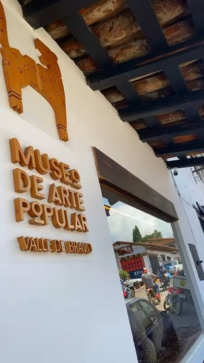

El Museo de Arte Popular de Valle de Bravo, también conocido como MUAPO, es un museo pequeño pero muy espectacular que está en el centro histórico de Valle de Bravo, en una casona antigua con fachada blanca y puerta de madera tallada, como se ve al inicio de tu video.
Es un museo privado que guarda la colección de la Fundación Mamá Viña y Oscar, que se dedicaron a rescatar y coleccionar el arte popular de todo México.
Su objetivo es impulsar y dar a conocer el arte popular mexicano como patrimonio de todos, y que la gente conozca el trabajo de los grandes maestros artesanos de los 32 estados del país.
La entrada es gratuita y la visita es solo con guía, que te va explicando la historia, la técnica y el significado de cada pieza.